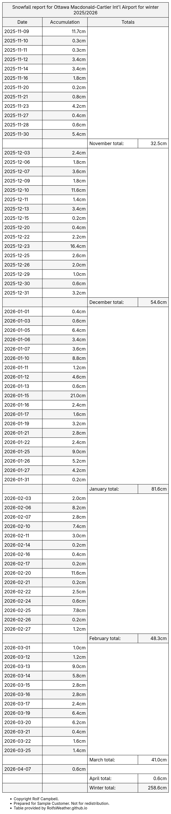

Know when to send the plows.
Detailed snow forecasts sent to your inbox, and snow totals sent to your phone while the storm is happening. For snow removal businesses.
Tired of checking multiple websites to find how much snow is forecast? Annoyed by vague forecasts like "snow starting in the morning"? Struggling to find freezing rain amounts for billing? I watch the snow all night so you don't have to.
What's included
Daily snow forecasts
A daily email when snow is in the forecast, with start and end times, snow and rain ranges for each storm, charts of the expected snowfall, and a chart comparing the weather models.
Live storm totals
Running snow totals during the storm by email, text message or X, measured at your nearest listed airport.
"Ottawa airport snow total as of 3am: 8cm since the snow started yesterday at 9pm."
Seasonal reports
Day-by-day and monthly snowfall and freezing rain totals for the winter so far, attached to your forecast email. Useful for billing.
A weather expert to ask
Online chat or email with me about what's coming, on evenings and weekends.
Service follows the weather, not the calendar. It starts when the snow starts and ends when the snow ends.
Where
Forecasts are prepared for your own service area. Live storm totals and seasonal reports use official airport snowfall measurements, which are available for:
British Columbia
Vancouver, Victoria, Kamloops, Penticton, Cranbrook, Williams Lake, Fort St. John, Terrace, Port Hardy
Alberta
Calgary, Edmonton, Grande Prairie, Cold Lake
Saskatchewan
Regina, Saskatoon, Kindersley
Manitoba
Winnipeg
Ontario
Ottawa, Toronto (Pearson), Hamilton, London, Trenton, Wiarton, Sudbury, Sault Ste. Marie, Timmins, Kapuskasing, Thunder Bay, Kenora, Sioux Lookout
Québec
Montréal (Trudeau and Mirabel), Québec City, Saguenay (Bagotville), Roberval, Rouyn-Noranda, Mont-Joli, Gaspé, Sept-Îles
New Brunswick
Moncton, Saint John
Nova Scotia
Halifax, Greenwood, Yarmouth, Sydney
Prince Edward Island
Charlottetown
Newfoundland
St. John's, Gander, Deer Lake
Covering more than one area? Extra forecast locations are $100 per year each. Don't see your city? Ask me about your area.
Custom reports
Available for an additional charge, built around how your contracts work:
- Cold rain reports
- Hours of snow reports
- Combined winter precipitation reports covering both rain and snow
Need something else? Tell me what you need.
Pricing
Early bird discount: Save $100 when you sign up before the end of October.
Referral bonus: For every new customer that mentions you during their sign-up, you get $100 off your next year's price.*
Your plan includes forecasts for one location. Need forecasts for more than one area, like a second city or neighbourhood? Each extra location is $100 per year. Custom reports are extra. For more information, contact Rolf Campbell at RolfsWeather@gmail.com.
*Discounts can be combined. If your price dips below $0 because of discounts, the remaining discounts will be carried over to your next year's service contract. Discounts always apply to your next contract. No money will be refunded due to a referral occurring after you've started your contract; that discount will be carried over to your next year's contract.
Samples
Forecast text
An example of the format, from an Ottawa forecast issued October 21st, 2020. Forecast emails also include charts.
Oct 25 -- Oct 27
Rain mixed with snow starts Sunday night and ends Tuesday morning..afternoon.
❄ Total Snowfall: 4cm..5cm (with a small chance of up to 7cm, or as little as 2cm). Some may melt due to temperatures near or above freezing.
💧💧💧 Total Rain: 11mm..22mm (with a small chance of up to 25mm, or as little as 9mm).
Snowfall report, winter 2025/2026
Ottawa airport. Scroll to see the whole winter, or open the full report.



Free Ottawa weather records
I also post Ottawa weather records and statistics, free. Follow along or read the Weather FAQ.